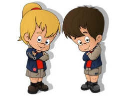

Chiro Kerkhoven
Chiro Kerkhoven
Chiro Kerkhoven
Chiro Kerkhoven
Bij Chiro Kerkhoven zorgt de leiding elke zondag voor een superleuke activiteit! Je wordt ingedeeld in een groep met kinderen van jouw leeftijd, zodat iedereen zich helemaal kan uitleven. Van spannende en stoere spelletjes tot creatieve knutselmomenten.
Er is voor ieder wat wils. Één ding is zeker: vervelen staat niet in ons woordenboek!
Maar Chiro is zoveel meer dan alleen de zondagnamiddagen.
Doorheen het jaar organiseren we ook leuke weekendjes, gezellige eetfestijnen en tal van andere activiteiten. En als hoogtepunt van het jaar trekken we in de zomer samen op kamp voor een onvergetelijke week vol plezier, avontuur en vriendschap!
Inschrijven bij Chiro Kerkhoven kan het hele jaar door. Je kan ons steeds contacteren via
chirokerkhoven@gmail.com, en dan bezorgen we je graag alle nodige informatie.
Daarnaast organiseren we elk jaar een gezellige inschrijvingsnamiddag in het derde weekend van september. Dan ben je van harte welkom tussen 14u en 17u om je kind(eren) in te schrijven. We ontvangen jullie graag op Kerkweg 30 met een stukje taart of cake en een drankje.
Het lidgeld bedraagt €30 voor een volledig werkjaar.
Ons uniform bestaat uit een blauw vest, rood t-shirt en beige broek of rok. Het vest en de t-shirt kan je bij ons aankopen en de rok/broek bij 'De Banier'.
Je kan ook bij eender welke winkel kleren kopen in deze kleuren.

Wij gaan ook elk jaar op kamp. Dit gaat door van 11-12-13 juli tot 19 juli. Dit wordt bepaald door de leeftijdsgroep waarin je je bevindt. Waar we heen gaan en wat het thema zal zijn, kom je altijd te weten via ons bivakboekje dat tussen april en mei aan huis wordt gebracht.